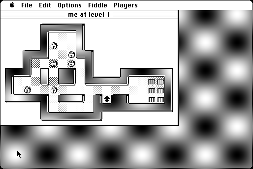

Download
MacSokoban-303.zip (123K) MacSokoban 3.0.3 repackaged into a zipped hfs disk image and checksum file. The disk image can be mounted with Mini vMac.
MacSokoban-303.hqx (176K) MacSokoban 3.0.3 in the original format.
copyright: Ingemar Ragnemalm
mod date: Dec 25, 1995
license: free for non-commercial use
official url :
Miscellaneous Games by Ingemar Ragnemalm
"The Warehouse Keeper game."

If you find these downloads useful, please consider helping the Gryphel Project, which hosts them.
Here are the md5 checksums for the downloads, signed with Gryphel Key 5:
--------- GRY SIGNED TEXT --------- 3cbf4daa59977874d3eea6b7c01238bc MacSokoban-303.zip 791a3eb79f935bfc8fceb4e6dc96851a MacSokoban-303.hqx ------- BEGIN GRY SIGNATURE ------- Gry/4Xa8CFcUzxdN/DDOvlPtL+emRsI1LfdZcfGi35R952eKbJwcUeogsn+QS/O5 8kPr/jvyFJaLjxUBF7ROdyxSEZY1BdKMAndc6eTcqtVe7+cbszn6rTl8duPJB0iN cLUxUVFtKtVeJ5kzyPeKWyu8CXwLIW6lLZAFBGMKUa/n8Lh0j0Inp4yzU0FHPiTN -------- END GRY SIGNATURE --------